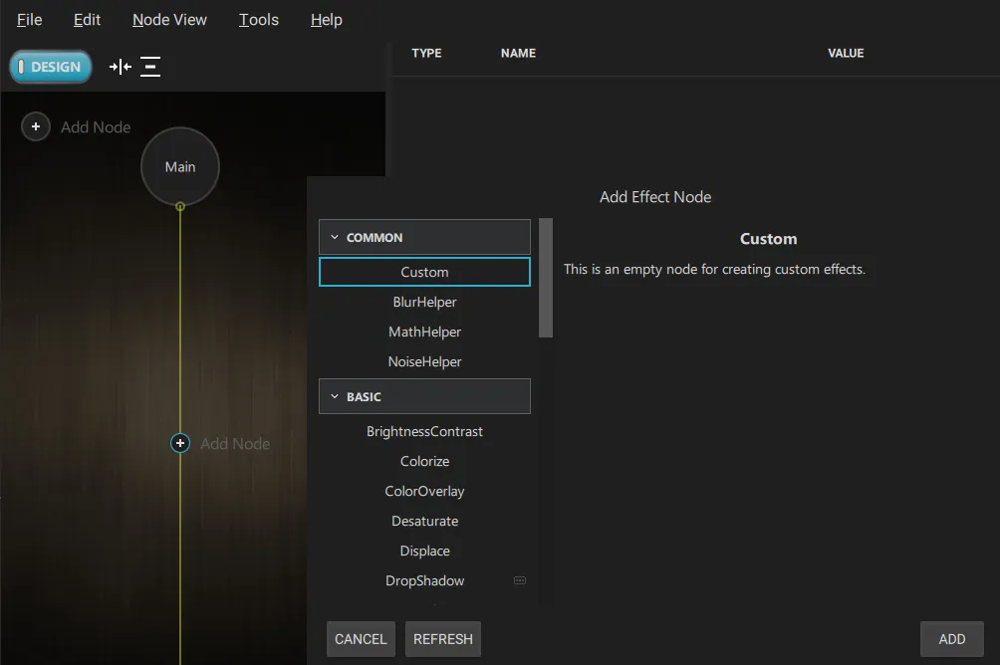
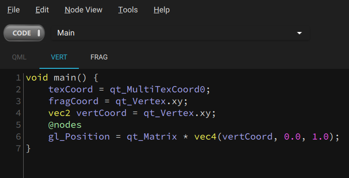

Porting Shadertoy effects to Qt Quick Effect Maker
You can use effects created in Shadertoy in Qt Quick Effect Maker. When you use Shadertoy effects, consider the following:
- Qt Quick Effect Maker doesn't support the following Shadertoy features:
- Multipass effects (Buffer tabs)
- Audio
- Cube maps
- 3D textures
- Shadertoy supports only fragment shaders and built-in textures. To improve the effect performance in Qt Quick Effect Maker, move some calculations to the vertex shader and use custom images to simplify the shader code.
- The coordinate system differs between Shadertoy and Qt Quick Effect Maker. In Shadertoy, the origin (0,0) is located in the lower-left corner while Qt Quick Effect Maker has the origin in the upper-left corner.
Using a Shadertoy effect in Qt Quick Effect Maker
To use a Shadertoy effect in Qt Quick Effect Maker:
- In Qt Quick Effect Maker, create a new effect.
- In the node editor, select Add node and then, under Common, select Custom. This creates an empty node.

- In Shadertoy, copy all the code from the Image tab.
- In Qt Quick Effect Maker, double-click the Custom node in the node editor. This opens the code editor.
- Paste the Shadertoy code to the Frag tab.
- Find the
Mainfunction in the code, it looks something like:void mainImage( out vec4 fragColor, in vec2 fragCoord )
- Replace this line with:
@main
Note: You can't have
@mainand the following { on the same line. - Optional. If the effect depends on the coordinate system, it appears flipped upside down. To solve this, you need to flip the y-coordinate:
- Go to the Vert tab.

- In the drop-down menu, select Main.
- Find the
fragCoordline, it should look something like:fragCoord = qt_Vertex.xy;
- Replace this line with:
fragCoord = vec2(qt_Vertex.x, iResolution.y - qt_Vertex.y);
- Similarly, you might need to adjust
texCoordandiMouse.
- Go to the Vert tab.
Now, the effect runs and looks the same as the Shadertoy effect.